H03/T15 · 실제8쌍 · 출판준비
네 기기 H03·기본T15 전후8쌍과 새PhoneMAX 자료를 모았습니다. 최종 한정 네이티브 품질 리뷰는 PASS WITH NOTES·미해결P1/P2/P3없음입니다. 정식 맵은 아직 바꾸지 않았습니다.
H03 strict78/두 요인과 T15 기본계산72/다섯 요인을 구분합니다. 현재 실제값이며 미래값을 고정하지 않습니다. 초기 viewport에서 T15 하단 요인과 tip은 스크롤 아래입니다.
H03 · regular
역사적 원본 before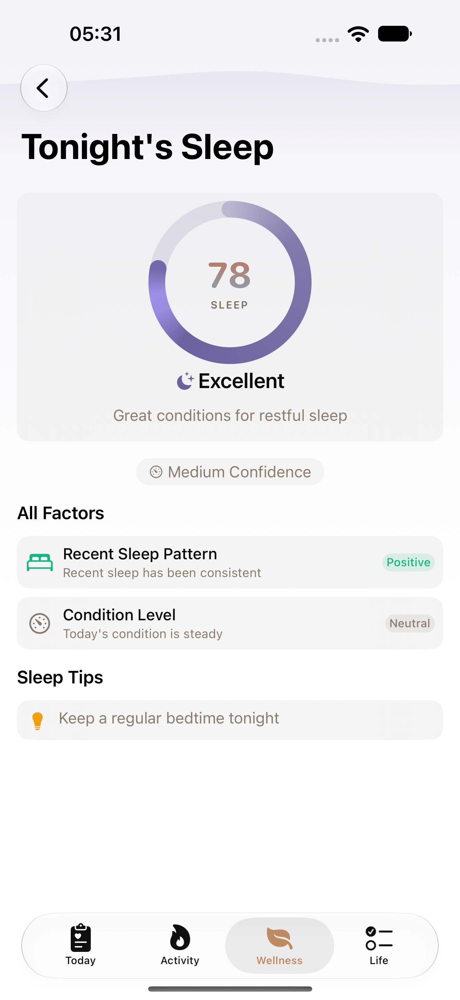
None · [1320, 2868] EXIF1
b597965629da27e6a3b32299417e604fbf9f1cdba58e4a17bbbb48ce09fe3f26실제 after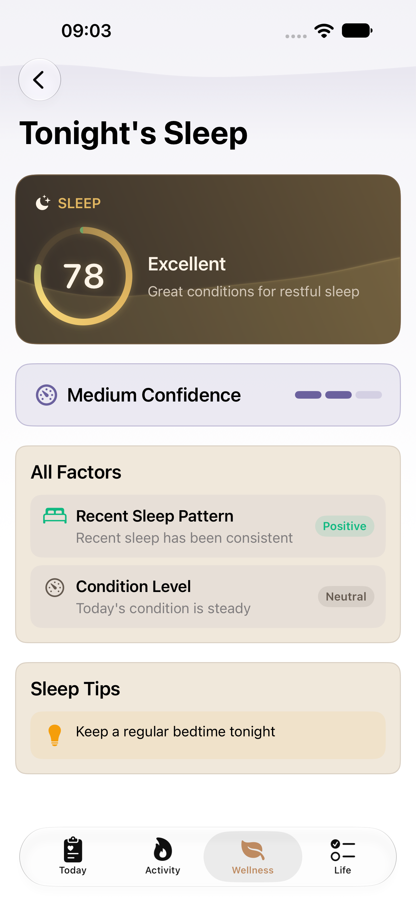
c243f52b · [1320, 2868] EXIF1
841c2af7767f5e82cd16fbd650f877c68bc7e25b91f39adfb57541b5748ee6e1 Historical strict H03 normal actuallyBack/detaildisappearance; old navbar query, not new rail branch.
H03 · ipad
역사적 원본 before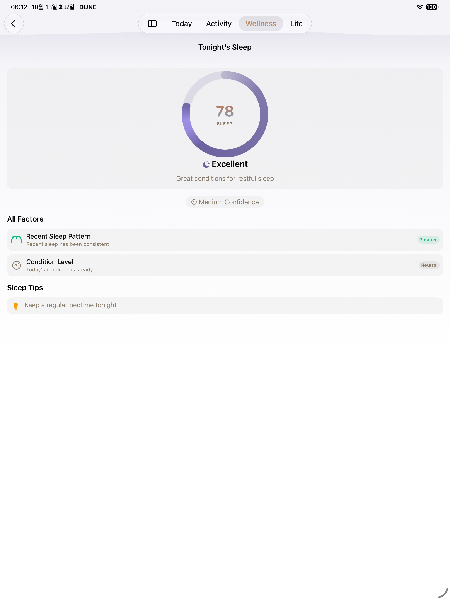
None · [2064, 2752] EXIF1
1130d9c36e8d02cf2ae49e21c3979c342a8768419e39bfa89b65acff2eddedfc실제 after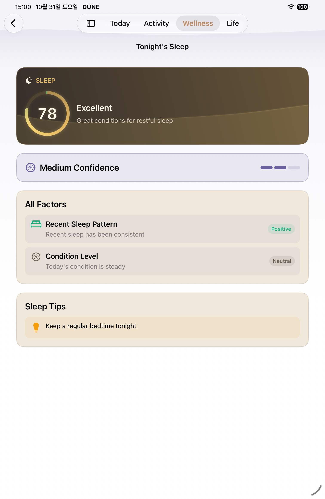
d5ed194f · [1512, 2316] EXIF1
5fe5e1b4a7788d92cff23d52750688487a8cd3c6875780ddc283f3c80ee3c6f1 Historical strict H03 normal actuallyBack/detaildisappearance; old navbar query, not new rail branch.
H03 · duo
역사적 원본 before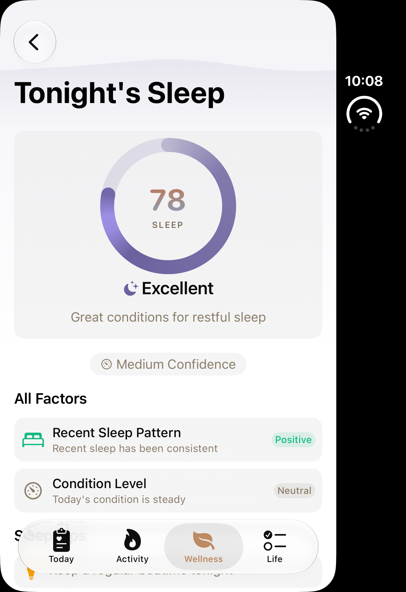
None · [1398, 2034] EXIF1
4b6f25e5d560d3ace10744e3acb0e27668dac846cd764999e0e416932863dbbe실제 after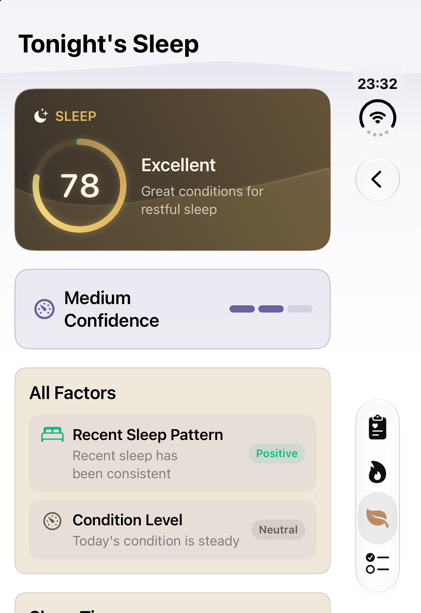
59fdf60f · [1398, 2034] EXIF1
2caff33b7324ff5e98a39de4764299340eb992dbc434a26dfd9a40f76c0c82cf H03 exact normal nodePassed/actualBack/detaildisappearance within FAILED2/1/1 mixedgroup; defaultT15negative. Originalbefore0LCD +separateparentafter0LCD, no collectorpostposeproof; archiveTimeDirty only after run complete.
H03 · duo-open
역사적 원본 before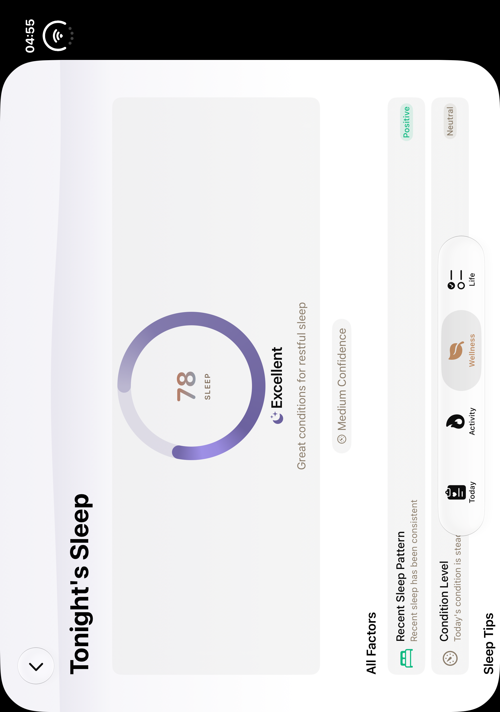
None · [2006, 2852] EXIF6
ed76e8dce1d851074a297c95e6c2a1d83f7ad50b43c7589ab82b2111579441a3실제 after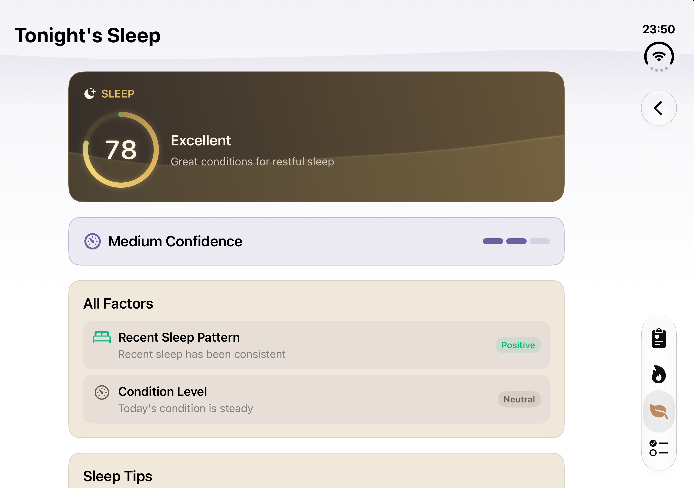
02cc8c81 · [2853, 2007] EXIF1
0ebf51045066242baf967e5c52e78d29ad635126989688b9058bfa9511cfa9c2 Actualnormalcase2/2PASS; H03strict78/twofactor versusdefaultT15computed72/fivefactor. RealBackexercised; T15Today/hubreturnasserted. Initialviewportonly; lowerT15factors/tipscrollable, notallsimultaneouslyvisible. Rawpending-parentposeproofpreserved; separatepostcollectionreview.
T15 · regular
역사적 원본 before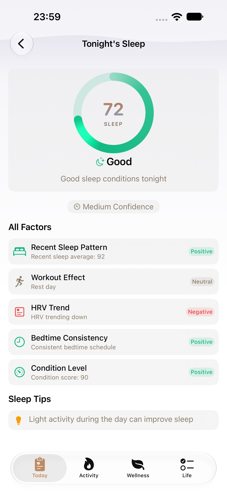
None · [1320, 2868] EXIF1
43020e0c89dac6932823ea8a87e65d93bd3c1b47bf20d7b7416671d6096634aa실제 after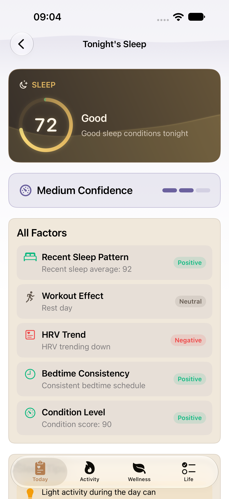
c243f52b · [1320, 2868] EXIF1
8df426d32f0d8dc989585e47bae68803dcc22860e2fbe715fbce878ccb5cbec0 Historical DEFAULT computed T15 loaded visual + wrapper/Today methodPASS; NO nativeBack/loaded-score assertion in old method; not strictfixture/current stronger test certification.
T15 · ipad
역사적 원본 before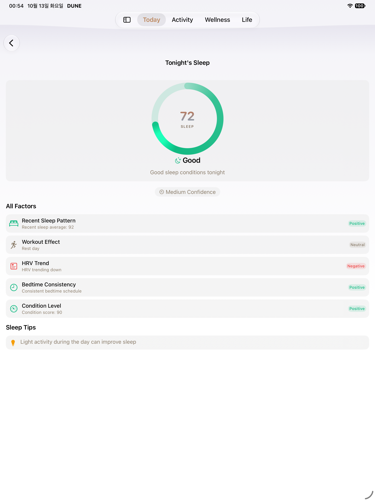
None · [2064, 2752] EXIF1
a7346b66c400c973d6ca517112c8ea79a5b98e6e78c48f387d1bb5d9190041be실제 after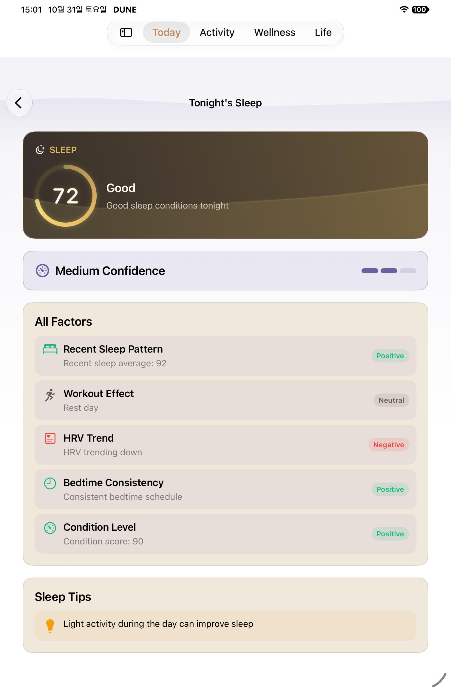
d5ed194f · [1512, 2316] EXIF1
431eae01d80e766cf91467ae5b39f4c97a274fd09a85d2ef68aae4ad921ea7cd Historical DEFAULT computed T15 loaded visual + wrapper/Today methodPASS; NO nativeBack/loaded-score assertion in old method; not strictfixture/current stronger test certification.
T15 · duo
역사적 원본 before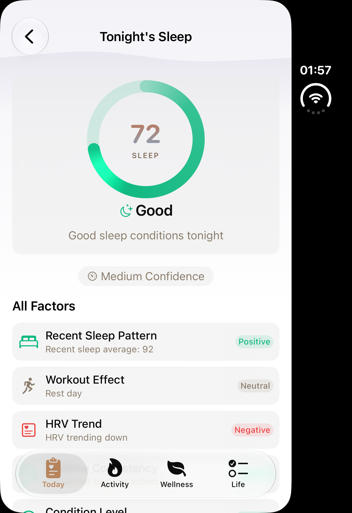
None · [1398, 2034] EXIF1
1e62f95637f00929e823d1a52f4f6a2e4583622fa160e7a8705444678f7c0662실제 after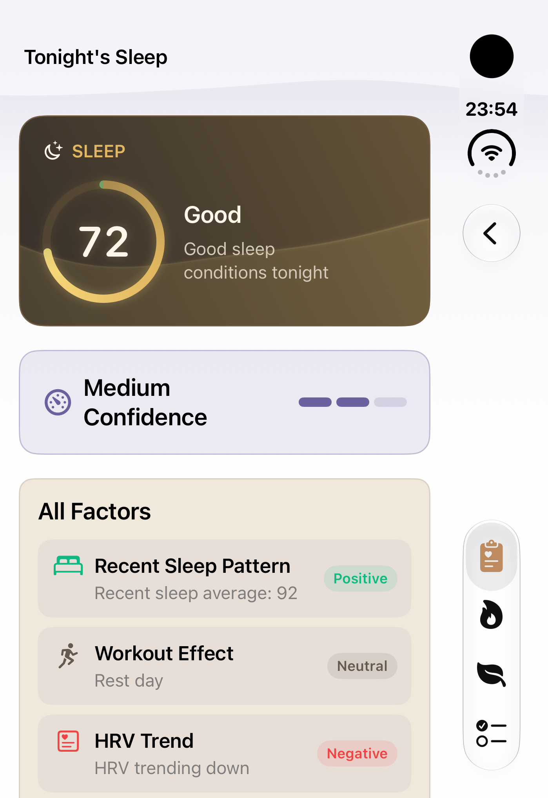
02cc8c81 · [1398, 2034] EXIF1
af3d40024c02c7ab484f5afeff0ba815bea30179b19dd06c6e0df53ea5240a30 Actualsingleapprovedextra1PASS defaultcomputedcase, loadedscore/guide/confidence +Today/nativeBack/hubreturn. Originaltwofailuresretained; initialviewportfirst3factorsonly,last2/tipscrollbelow.003Hubexcluded. NoH03repeat/nofurtherextra.
T15 · duo-open
역사적 원본 before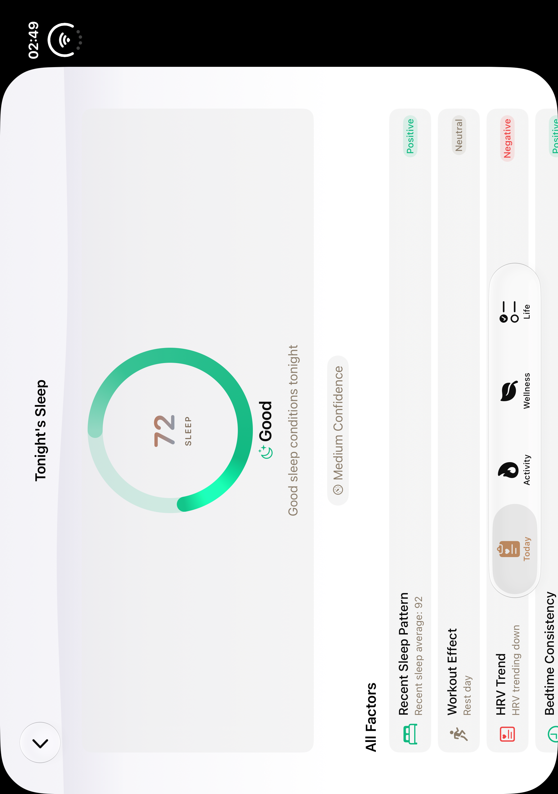
None · [2006, 2852] EXIF6
87b61a621a3aa756e0e1486acd5a10a5a9a066e1a6b3cf35511dc386046470b7실제 after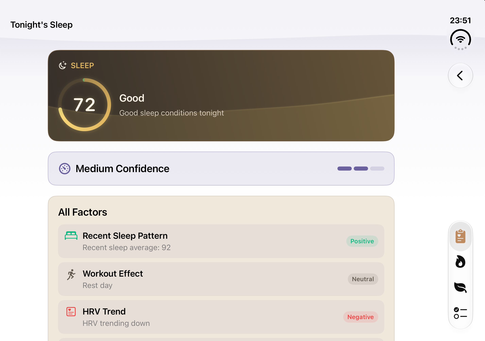
02cc8c81 · [2853, 2007] EXIF1
a8410ba231782a684b97c0f09d75ef926fb3a535378b3423b3a0a112b2532766 Actualnormalcase2/2PASS; H03strict78/twofactor versusdefaultT15computed72/fivefactor. RealBackexercised; T15Today/hubreturnasserted. Initialviewportonly; lowerT15factors/tipscrollable, notallsimultaneouslyvisible. Rawpending-parentposeproofpreserved; separatepostcollectionreview.
새 finalglyph Phone MAX · 실제1PASS
59fdf 원본3장; H03MAX는 실제 Back·상세 사라짐을 검증했습니다.
Phone MAX hero/confidence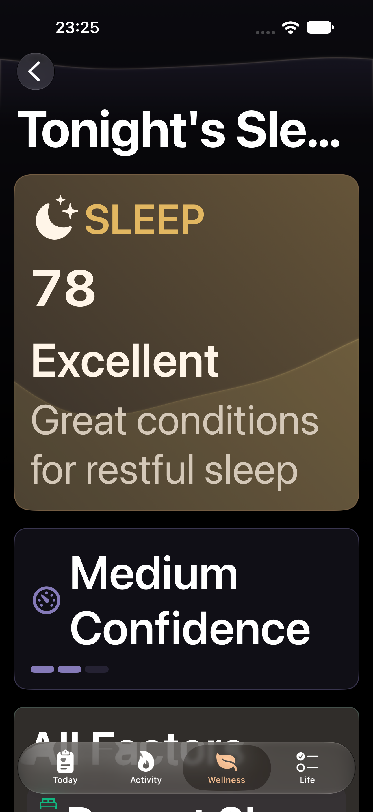
59fdf60fa3da4a87bad0da59c07df076d0509fe9 · [1320, 2868] EXIF1
d260cdf874d2e641c10405e63d46f0785fe79b2b5939b3654a12b42f697e1dabPhone MAX factors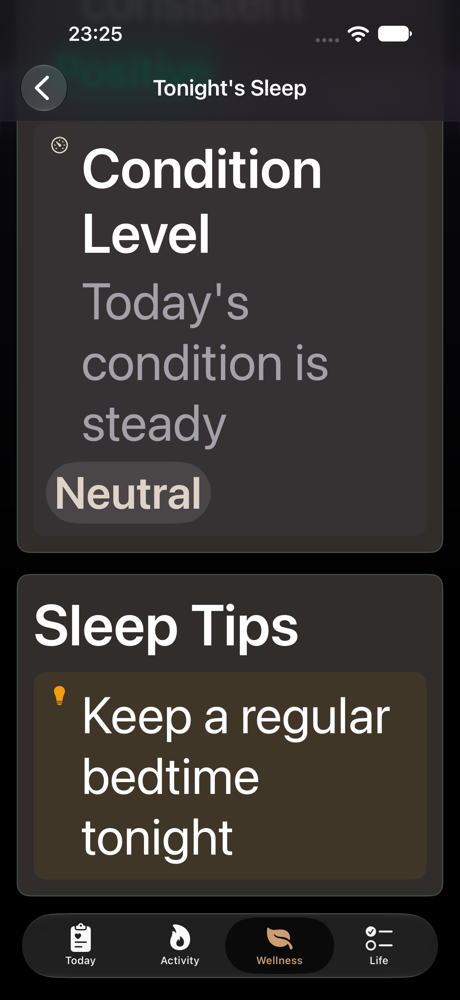
59fdf60fa3da4a87bad0da59c07df076d0509fe9 · [1320, 2868] EXIF1
10c1f5512c0d8ef3dedeb2c0a87d607ad65eaf466260b57a7b181b84de8649acPhone MAX tip59fdf60fa3da4a87bad0da59c07df076d0509fe9 · [1320, 2868] EXIF1
43d466ecd424581994a29620efefbff25e3f1698174e1f3bebb24b42e5b04db0 기존 iPad finalglyph MAX · 별도1PASS
iPad MAX supplement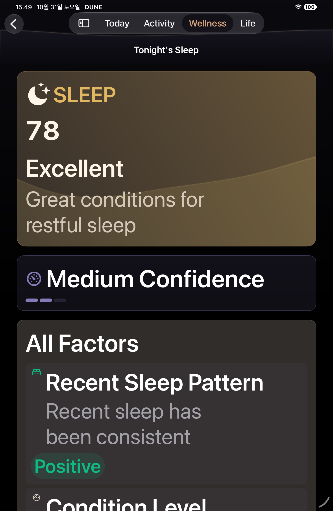
745737b5 · [1512, 2316] EXIF1
5099d659f8d1ba29c22f884094e7ebfc8670dd65fc75a142c7517c599e9dcb23iPad MAX supplement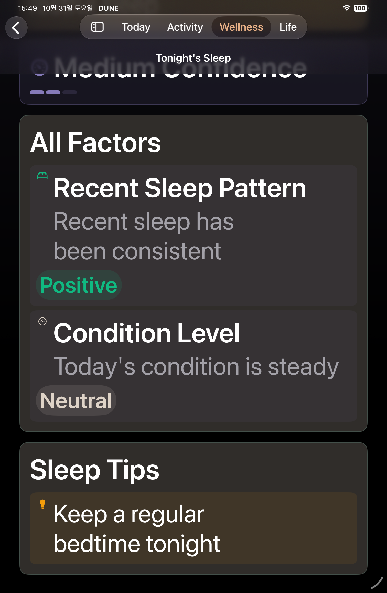
745737b5 · [1512, 2316] EXIF1
16eef2ae5f7c0774a57ee993c5d3235e183b982f7ea53a5f9f8c2b823304a955 실패·복구·범위
Closed 원래 그룹은 FAILED2/1/1이며 H03만 개별통과했습니다. 같은ID T15조건부1건은 잘못된공유root검사에서 실패했습니다. 그 두 실패를 그대로 보존하고 새로 허용된 원래T15 한건만1/1통과했습니다. H03양성을 반복하지 않았습니다. 새extra는1소비/0잔여입니다.
H03closed는 rawbefore0LCD+별도parentafter0LCD이고 collectorpostpose가 없음을 보존합니다. Open8ACK180LCD-1, closedT15extra3ACK0LCD의 rawpending-parent문구를 바꾸지 않고 별도 실제리뷰를 기록했습니다. 로드전/teardownhub를 상세after로 사용하지 않았습니다.
역사적 Phone/iPad기록·소스·기기·옛Duo자세미확인 및 defaultT15옛검사Back미실행 범위를 보존합니다. 전체회귀·현재HEAD CI·출시완료 주장이 아닙니다.
원본출처·영수증·해시 · 읽는방법·미완료
H03_T15_INSTALLED_EIGHT_ROWS · installedtrue. 정식 맵의 H03·T15 여덟 행과 해당 Today·Wellness 보드를 갱신했습니다. 다른 화면·H02·Watch와 원본 PNG 바이트는 보존했습니다.